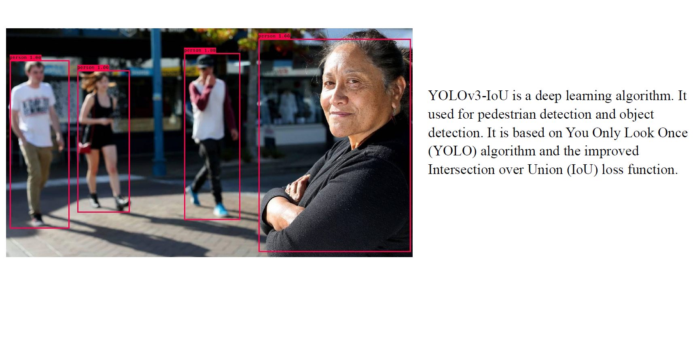
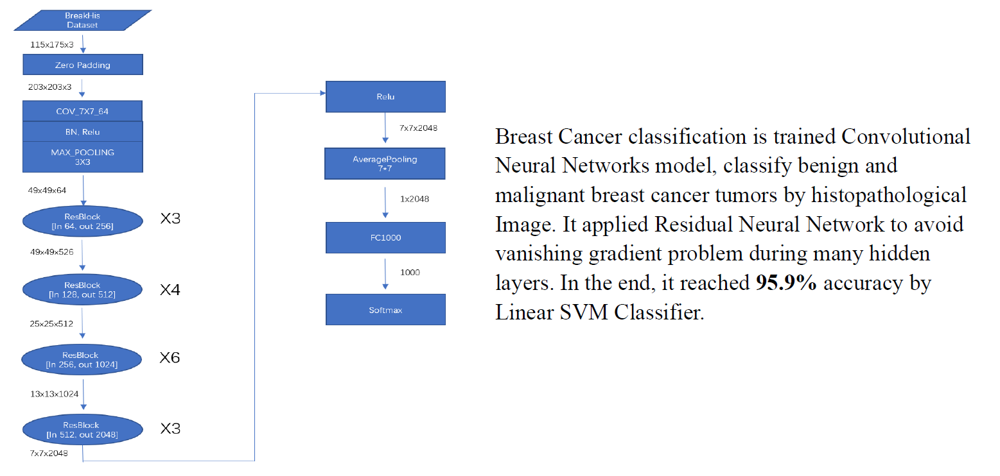
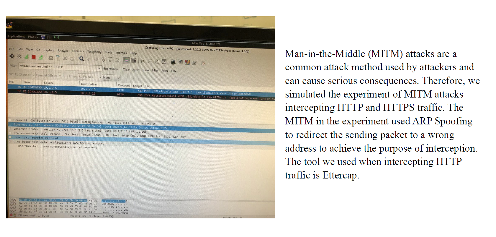

网络系统开发与调试
熟悉 Linux / AlliedWare Plus 环境下的软件维护、补丁开发、日志分析与故障定位，参与多型号交换机版本稳定发布。
软件开发工程师 · 网络系统 · 自动化测试
具备交换机软件开发、Linux 系统调试、网络协议分析与 Python 自动化工具开发经验。熟悉 TCP/IP、ARP、OSI 模型与 Wireshark 抓包定位，也可使用 NumPy、Matplotlib、Pandas、PyQt 等工具完成数据处理、分析、可视化与桌面工具开发。
Profile
熟悉 Linux / AlliedWare Plus 环境下的软件维护、补丁开发、日志分析与故障定位，参与多型号交换机版本稳定发布。
使用 Python、Bash 构建自动化测试脚本，覆盖回归测试、链路稳定性、模块兼容性与负载测试场景。
参与日、美、台跨区域团队需求评审、联调和版本迭代，注重问题闭环、细节复盘与稳定交付。
Experience
软件工程师
实习数据分析师
Projects
企业级交换机研发
参与 AT SBx908 GEN3 高性能核心交换机研发，支持最高 400G 速率与可堆叠模块化架构；负责链路控制、协议调试、IDPROM 硬件管理与 17+ 个自动化测试工具建设。

目标检测优化
基于 YOLO v3 研究行人检测任务中的边界框回归问题，比较 IoU、GIoU、DIoU、CIoU 等损失函数对检测精度和速度的影响。通过引入 DIoU 与 CIoU loss，并结合 DIoU-NMS 后处理策略，在 PASCAL VOC 2007 数据集上将 AP 从 45.24 提升至 48.21，相对提升约 6.5%，加深了我对目标检测、CNN、YOLO 架构、边界框回归、损失函数设计和模型评估指标的理解。

医学图像分类
基于 BreakHis 乳腺癌病理图像数据集，使用 CNN 对乳腺癌组织切片进行良性 / 恶性分类。项目通过图像缩放、patch 切分、滑动窗口与随机采样等方法处理高分辨率医学图像，并比较不同放大倍率和采样策略下的分类效果，加深了我对医学图像处理、深度学习分类模型、CNN 架构和模型评估指标的理解。

网络安全实验
基于 ARP Spoofing / ARP Poisoning 搭建中间人攻击环境，使用 Ettercap 劫持客户端与服务器之间的通信流量，并通过 Wireshark 分析 ARP、HTTP POST 和 TCP 数据包，观察 HTTP 场景下账号密码明文暴露的风险。同时对比 HTTPS 加密通信，了解 SSL 拦截、证书验证和网络安全防护机制。
Education
研究方向：云存储安全与可验证数据技术。毕业论文为《面向云存储的可公开验证数据复制与可检索性证明的实现与评估》。
论文发表于 ASTESJ 2021 年第 6 卷第 2 期，主题为适用于云存储的高效公开可验证数据复制和可检索性证明。
系统学习计算机科学基础、算法、网络、数据挖掘、软件开发与项目实践。
获得微积分学科优异表彰证书。
Contact
目前常住浙江省杭州市滨江区，求职方向为软件开发工程师，也关注网络系统、自动化测试、系统调试，以及基于 Python、NumPy、Pandas、Matplotlib、PyQt 的数据处理、分析、可视化与工具开发相关岗位。
当前位置：浙江省杭州市滨江区 · 点击地图打开导航